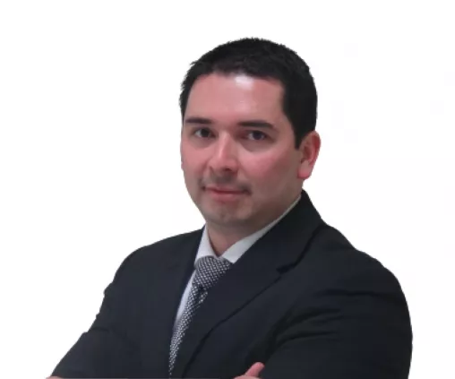

Elige el formato de tu interes
-
Fecha de Inicio
21 de agosto
-
Horario
Miércoles y viernes de 6:30 pm a 10:30 pm
-
Duración
22 meses aproximadamente
-
Inversión
25 cuotas de S/.1,079.60 (No incluye viaje UEMC)
-
Asesor
César Medina
-
Fecha de Inicio
21 de agosto
-
Horario
Miércoles y viernes de 6:30 pm a 10:30 pm
-
Duración
22 meses
aproximadamente -
Inversión
25 cuotas de S/988 (No incluye viaje UEMC)
-
Asesor
César Medina
-
Fecha de Inicio
18 de julio
-
Horario
Online
-
Duración
24 meses aproximadamente
-
Inversión
24 cuotas de S/.829.17 (No incluye viaje UEMC)
-
Asesor
César Medina
Siempre Conectados
Carmela Conwtreras
Graduada de la Maestría de Administración de Empresas. Responsable DTI en Prosegur Perú. 100% comprometida con todo lo que realiza, ama viajar y disfruta manejar bicicleta.
Ver video
Vive una Verdadera Transformación Personal y Profesional
El mundo en el que vivimos está evolucionando. Las nuevas tecnologías transforman la perspectiva del negocio e incrementan la competitividad, a una velocidad sin precedentes. Por ello, el entorno actual requiere líderes con nuevas formas de pensar para afrontar los retos que se les presentan.
La Escuela de Postgrado de la Universidad Tecnológica del Perú (EPG UTP) comprende esta realidad y toma el compromiso de formar profesionales que aporten valor y se destaquen por un desempeño innovador, espíritu emprendedor, visión global y orientación a resultados exitosos. Nuestra Maestría en Administración de empresas está orientada hacia el mercado, con un enfoque innovador y disruptivo con el objetivo de generar a nuestros alumnos verdaderas experiencias de transformación personal y profesional.
Nuestro MBA está acreditado por ACBSP, una Acreditación Internacional de Estados Unidos que garantiza la calidad académica de nuestra Escuela, además, destaca y promueve la mejora continua de los procesos. Asimismo reconoce la excelencia en la enseñanza de nuestro MBA así como en los programas de negocios en todo el mundo.
Beneficios
-
4 Certificaciones
-Maestro en Administración de Empresas, otorgado por la Universidad Tecnológica del Perú.
-Máster en Dirección de Empresas, otorgado por la Universidad Europea Miguel de Cervantes - UEMC, España*
-Misión Académica Internacional con la Universidad Konrad Lorenz, Colombia*.
-Certificado en Biomimicry en alianza con Origgen.
*Las certificaciones en la UEMC (España) y Konrad Lorenz (Colombia), son opcionales y no están incluidas en la inversión de la maestría.
-
Máster en Dirección de Empresas (Opcional)* con la Universidad Europea Miguel de Cervantes - UEMC, España
El viaje es obligatorio para obtener el Máster en Dirección de Empresas otorgado por la UEMC. Para participar en el viaje, se requiere contar con el Grado de Maestro emitido.
El Máster es opcional y no está incluido en la inversión de la Maestría en Administración de Empresas - MBA.
-
Misión Académica Internacional (Opcional)* con la Universidad Konrad Lorenz de Colombia.
Quienes participan en la Misión Académica Internacional, vivirán la experiencia de la Inmersión Internacional en el Comportamiento del Consumidor a nombre de Konrad Lorenz,Colombia.
*La Misión Internacional es opcional y no está incluida en la inversión de la Maestría en Administración de Empresas - MBA.
-
Taller Biomimicry
Una experiencia disruptiva en el mundo de la innovación circular, que busca que los ejecutivos aprendan a imitar las estrategias de la naturaleza para resolver problemas de forma diferente, efectiva y eficaz. La inmersión es un serious game, busca el change business a través de la formación de equipos que trabajan co-creativamente buscando resolver un reto empresarial. Usamos el aprendizaje basado en problemas para el desarrollo de la experiencia.
-
Proyección Global
El programa brinda las herramientas claves para identificar tendencias más allá de las fronteras. Esta visión global, compartida por profesores extranjeros, es de gran utilidad para la gestión empresarial en diferentes contextos y en entornos de cambio.
-
Enfoque Multidisciplinario
Gracias a las diversas áreas funcionales claves para la dirección de las organizaciones que ofrece el MBA, el participante desarrolla una visión holística de la realidad, la cual se manifiesta en la toma estratégica de decisiones.
-
Liderazgo Transformador
El MBA promueve una relación de estimulación y crecimiento que convierte a los seguidores en líderes y a los líderes en agentes de cambio. De esta manera, fomenta el desarrollo de habilidades y aptitudes gerenciales, estratégicas e interpersonales.
-
Asignaturas que Trascienden los Negocios
Las asignaturas se complementan de forma efectiva mediante el método de casos, debates, trabajos en equipo, presentaciones y proyectos fuera de clase. Además se aplica la filosofía “Learning by doing”, a través de simuladores de negocio, para la toma estratégica de decisiones con problemáticas reales del mundo empresarial.
-
Clases con Docentes Internacionales y Cursos de Liderazgo
El programa destinará 5 fines de semana para las clases con docentes extranjeros y cursos de liderazgo. Estás serán dictadas sábados y domingos de 09:00 a.m. a 01:00 p.m. y de 02:00 p.m. a 06:00 p.m.
-
Docentes con Formación Académica Sólida y Trayectoria Empresarial
El claustro de la EPG UTP está conformado por expertos profesionales, quienes cuentan con estudios superiores en prestigiosas universidades del mundo. Además tienen un trayectoria formada en la dirección de reconocidas empresas.
-
Medicion de Competencias
En la EPG UTP nos aseguramos de que nuestros estudiantes logren las competencias generales y específicas ofrecidas en cada programa de maestría. Por ello, todos los estudiantes participan en una medición de competencias, en dos oportunidades, durante sus estudios. Cada estudiante recibe un informe personalizado con sus resultados, los que permiten identificar oportunidades de mejora. Esta información nos permite seguir mejorando nuestros procesos formativos, ya que estamos comprometidos con la mejora continua.
Misión Académica Internacional (Opcional)* con la Universidad Konrad Lorenz de Colombia
Inmersión Internacional en el Comportamiento del Consumidor a nombre de Konrad Lorenz,Colombia
La Misión Internacional es opcional y no está incluida en la inversión de la Maestría en Administración de Empresas - MBA.
La EPGUTP y Origgen se unen en alianza para incorporar el taller de Biomimicry
Una inmersión personalizada donde se desarrollan 5 metodologías alternas.
Una experiencia disruptiva en el mundo de la innovación circular, que busca que los ejecutivos aprendan a imitar las estrategias de la naturaleza para resolver problemas de forma diferente, efectiva y eficaz.
Máster en Dirección de Empresas (Opcional)* con la Universidad Europea Miguel de Cervantes - UEMC, España
El viaje es obligatorio para obtener el Máster en Dirección de Empresas otorgado por la UEMC. Para participar en el viaje, se requiere contar con el Grado de Maestro emitido.
El Máster es opcional y no está incluido en la inversión de la Maestría en Administración de Empresas - MBA.

Malla Curricular
x
Docentes
-
Adela Zevallos

Máster en Inteligencia Emocional en la U. Complutense de Madrid (España). Facilitadora en la Metodología Lego® Serious Play®. Es Consultora Senior en Cambridge International Consulting y Whalecom. Ha sido Consultor Senior de selección de personal en MIDIS.
-
Alan Ferrandiz

MBA, URJC (España), MSc in Engineering Management, US Florida (USA). Actualmente se desempeña como Business Analytics Consultant en Socius Insurance Services Inc., San Francisco, CA (USA): Dirigió el Área de Marketing y Desarrollo de Negocios en Laboratorios Roe.
-
Alejandro Robatti

MBA, U. Piura, con más de 20 años de experiencia laboral en multinacionales, nacionales y centros corporativos líderes de los sectores de consumo masivo, minería y teleco en roles gerenciales a nivel local como regional. Socio en HR-IN y Consultor en Prosperconsulting (USA).
-
Alexis Rivera Del Mar
MBA, UPC. Experiencia en banca y compañías de tecnología líderes a nivel global. Account Director en Huawei. Ha sido Gerente de Desarrollo de Negocios en Wipro, Territory Account Manager en IBM y Head de Canales Electrónicos en Interbank.
-
Alvaro Echeandía
Maestro en Administración de Empresas de la EPGUTP, Consultor y experto gestor comercial, con más de 13 años de experiencia en el rubro de Recursos Humanos. Facilitador y Diseñador de Workshop Certificado con el método Lego® Serious Play®.
-
Ana Cecilia Mac Lean

Abogada (Juris Doctor) de la Georgetown University Law Center con una Maestría en Alta Dirección y Liderazgo de la Universidad Peruana de Ciencias Aplicadas. Consultora Independiente, Docente y Directora de la Maestría en Docencia Universitaria y Gestión Educativa de la Escuela de Postgrado de la UTP
-
Anabel Reaño

Máster en Administración de Negocios y TI (MBA-IT), U Lima. Ingeniera Industrial, UCSMA graduada con honores. Con capacitación profesional en Silicon Valley California - EEUU. Ejecutiva de Evaluación de Proyectos en Proinnóvate del Ministerio de la Producción. Se desempeñó como Gerente General en SENCICO.
-
Ariana López

MBA, UTP. Experta en Desarrollo Humano, Transformación Cultural, Comunicaciones, RSE, Metodologías Ágiles, Facilitadora de Talleres, Speaker. Facilitadora de habilidades blandas y técnicas de autodescubrimiento. Es Jefe Corporativa de Clima, Cultura y Comunicaciones de AESA - Grupo Breca y Gerente de la Consultora 3c60 Estrategia Humana. Ha sido Jefa Corporativa de Comunicación Interna en el Grupo San Pablo.
-
Berenice Palomino
Doctoranda en Educación, Universidad de Valencia (España). MBA Directivo, UPC. MBA, IEDE (España), Psicóloga Educacional, PUCP. Diplomada en Administración de Proyectos TI. Es Jefe Académico de la EPGUTP, facilitadora certificada de la Metodología Lego® Serious Play® y Fundadora de TesisTip.
-
Carlos Dulanto

Maestría en Psicología Organizacional, USMP. Especialización en Biomimicry for Creative Innovation, Specialist Circular Economy, University of California (Berkley). CEO de Gen Quijote: Business, Strategy & Innovation en Perú, México y España, Publicista y Consultor en Innovación Estratégica y Conferencista Internacional para Roastbrief & La Cocina Mx. Ha sido Head of Planning en Ogilvy & Mather.
-
Carlos Mendiburu
Magíster en Matemáticas Aplicadas, PUCP. Economista. Especialista en Métodos Cuantitativos y Métodos de Proyección. Es Jefe del Departamento de Políticas Estructurales en el Banco Central de Reserva del Perú, donde también fue Jefe del Departamento de Programación Financiera.
-
Carlos Mory

Doctor en Ciencias de la Educación, UMCH. Magíster en Administración de Empresas, UPC. Magíster en Docencia para la Educación Superior con distinción “Magna Cum Laude”, UNAB (Chile). Master Europeo en Dirección de Negocios Internacionales, EOI (España). Doble licenciatura: Administración y Marketing, UPC. Egresado del Programa de Liderazgo para Ejecutivos, Cornell University (USA). Consultor independiente de pequeñas y medianas empresas. Catedrático Universitario a nivel pre y post grado. Más de 25 años de experiencia profesional en administración, consultoría, liderazgo de equipos, gestión académica, emprendimiento y marketing. Representante del Perú en el 2do. Curso Internacional de Gerencia de PYMES (Israel, 2003).
-
Carlos Saavedra

MBA (ESAN), Maestría en Gestión de Servicios de Salud (USMP), Gerente General en Clínica San Juan de Dios, ex Gerente General en Clínica Mac Salud.
-
Carlos Urbina

Ejecutivo senior corporativo, contador auditor colegiado y MBA con mención en Dirección General. Docente a tiempo parcial en la Universidad de Lima y en la Escuela de Postgrado de la UTP. Amplia experiencia en empresas multinacionales con dominio en la gestión de las áreas de auditoria, finanzas, tesorería, contabilidad, planeamiento financiero y proyectos.
-
Cesar Alosilla-Velazco

Magister MEDEX PAD, U. de Piura. PADE Marketing, ESAN. Administrador, PUCP. Mentor Profesional HCN. Coach Profesional ICF. Gerente General OPTIMUS CONSULTING. Ha sido Gerente Gestión del Talento y Comercial en 3M, Backus, Antamina, TIM. Director SAMFOOD.
-
Cristy García

Candidata al MBA de E-commerce en la Universidad de Barcelona, España. Máster en Marketing & Gestión Comercial en Postgrado UTP. Profesor y asesor de tesis en E-commerce en Escuela de Postgrado de la UTP y miembro de la Sociedad Peruana de Marketing. Consultor en Marketing Digital en Perú y España con 14 años de experiencia en empresas reconocidas en diversos sectores.
-
Daniel Onchi
Magister en Supply Chain Management, ESAN. Ingeniero Zootecnista, UNALM (España). Genética Aviar-JICA (Japón). Especialista en Operaciones y Logística Marítima-Escola Europea Intermodal Transport (Italia). Director de la Maestría en Gerencia de Operaciones y Logística, UTP. Asesor Gestión Empresas, Operaciones y SCM
-
David Crovetto

Maestro en Administración de Empresas, UTP. Master en Dirección de Tecnología de Información, Business Excellence School – CTO (España). Ingeniero de Sistemas, UPC. Es Coordinador Técnico SIG Proyecto TCB-OACI, ONU - MTC. Cuenta con más de 20 años de experiencia en gestión pública y privada, Consultor Proyecto BID en planificación, presupuesto y proyectos e innovación TIC. Ha sido Jefe de TIC y Administrador en SENASA.
-
David Franco

MBA Internacional, EPGUTP y UEMC (España). Certificado en Metodología Lego® Serious Play®. Máster en Marketing, UPC y EOI (España). Director Académico de la Escuela de Postgrado UTP. Ha sido Jefe de Marketing en Real Club de Lima, Jefe de Producto en Banco Cencosud, Jefe Académico en EPG UTP y Jefe de Marketing en Grupo Deltron.
-
Edmundo Casavilca

Doctor en Contabilidad y Finanzas, USMP. MBA, UDQM (Canadá). Experiencia académica y profesional, en diferentes puestos relacionados con la gestión de empresas y la toma de decisiones. Director financiero de INMECI. Consultor del CII miembro del Grupo del BID.
-
Edmundo Casavilca

Doctor en Contabilidad y Finanzas, USMP. MBA, UDQM (Canadá). Experiencia académica y profesional, en diferentes puestos relacionados con la gestión de empresas y la toma de decisiones. Director financiero de INMECI. Consultor del CII miembro del Grupo del BID.
-
Eduardo Ferreyra

MBA, EPGUTP. Programa Ejecutivo en Marketing Centrum Católica, Coach Certificado Profesional de Global Impactum School Of Coaching, Especialización en Inteligencia Emocional y Neurociencias Aplicado a la Docencia Universitaria de Universidad Abierta Interamericana de Argentina. Ha sido Gerente de Cuentas Clave en Bitel Perú, Jefe e Postventa y Desarrollo Comercial en Fiberlux.
-
Eduardo Leiva
MBA, T.U (USA). IE, (España). Gerente de Negocios con más de 15 años en el sector automotriz y retail. Docente y expositor en Innovación, Startups y Estrategia. Cofundador de Startup Financiera. Mentor y jurado de programas gubernamentales de fomento a Startups. Consultor en Innovación y Estrategia.
-
Federico Vargas
Maestro en Banca de Finanzas, IEB en la U. Complutense de Madrid (España) .Certificado en Scrum Master (SMC™). Es CEO-Director en el Grupo Empresarial 360, Centro América y el Caribe y Director of the Board Global Accreditation Center, PMI®. Empresario y Gerente de Negocios con más de 19 años de experiencia Gerenciando Organizaciones y Proyectos en todo tipo de industrias, tales como Ingeniería, Telecomunicaciones, Tecnologías de Información, Financiero, Desarrollo Social y Consultoría.
-
Felipe Quispe

Maestría en Finanzas, ESAN. MBA, UNMSM. Estrategia Financiera, ESADE (España). Especialista en Tributación, PUCP. Gerente de Contabilidad en Hermes y Director en Confinad Consultores. Ha sido Contador Tributario en Molitalia y Gerente en diversas empresas.
-
Felipe Vanini

Magister Administración, ESAN. PDD, PAD. Ingeniero Industrial, UNT. Gerente General ARAMEUS consultora estratégica en crecimiento. Fue Gerente General Deprodeca (Gloria), Corp. Custer (Consumo Masivo) y Layconsa. Gerente Unidad Negocio/Marketing Supermercados Peruanos, Axur, TQC y otros.
-
Fernando Nakasone
Master en Dirección de Marketing y Gestión Comercial, UPC. Gerente General en Billin Salon & Spa. Ha sido Gerente de Agencia en Pacífico Vida y Market Researcher en Kanehide Shoji.
-
Fernando Canales
Máster en Gestión del talento, Responsabilidad Social Corporativa y Liderazgo, URJC (España). Ingeniero Mecánico, PUCP. Fundador y Director General de Vidan. Experiencia en Desarrollo de Productos nuevos en Yanbal. Coach con PNL, especialista en Desarrollo Humano.
-
Francisco Coriñaupa

Doctor en Educación, Estudios de doctor en Ciencias Sociales, UNMSM. Magister en Política Social, UNMSM. Especialista en Gestión Educativa. Psicoanalista. Articulista en temas de educación, realidad social y psicoanálisis.
-
Frank Cano
Executive MBA - Michigan State University Broad College of Business (USA) WACAM Region Ingredients, External Manufacturing & CariCam Cluster Sourcing Leader Project Management, Business Development & Sourcing Leader CAPEX - WACAM (Chile, Peru, Ecuador, Colombia, and Caribbean) and SCR (Supply Chain Reinvention - Peru, Mexico, Argentina, and Brazil.
-
Gerbo Pacchioni
MBA Directivo, UPC (España). MBA, UPC. Máster en Seguros y Gerencia de Riesgos, UPS (España). Ha sido Country Head of Peru en Willis Towers Watson y Director Comercial de Soluciones de Riesgos de Perú y Ecuador en Aon Corredores de Seguros.
-
Gisella Delgado
Dra. en Educación (UCV), Magister en Gobierno y Gerencia en Salud (UPCH), Lic. en Trabajo Social.
-
Iván Oviedo
Magíster en Dirección de Marketing y Dirección Comercial, EAE Business School (España). Gerente Comercial y Marketing en Geosys Perú y Business Development Manager en Degreed para Ecuador, Perú y Bolivia. Ha sido Sub Gerente de Marketing de Western Union Perú.
-
Javier Benitez

MBA, IE (España). Licenciado en CCEE y EE. Licenciado en Derecho. Coach y Autor de 4 libros. Director de BNI. CEO Se Feliz Coaching. Socio Director Gamelearn. Director Embajadores de la Felicidad. Docente de habilidades directivas.
-
Jeff Felipa

Magister en Administración de Empresas, INCAE Business School (Costa Rica). Magister en Dirección de Tecnología de la Información, UDEP. Gerente de Transformación e Innovación en Konecta Corporativa. Consultor y docente especializado en Metodologías ágiles e Innovación.
-
José Antonio Pereyra

MBA, UTP, Máster en Dirección de Empresas, UEMC (España). Ingeniero Industrial, U.Lima. Gerente General IT Servicios y Consultoría, Experiencia en Ventas y Marketing en Gillette, Gerente General de Urbano
-
José Campos

Máster, IESE (ESPAÑA). PAD Ingeniero Industrial colegiado U. Lima. Docente investigador EPGUTP. Gerente General VILLADEDOOD. Gerente Banca Empresa y Corporativa BBVA.
-
José Carlos Yamagoshi

Doctorando en Educación, MBA PAD, Máster Digital Business Management, UB (España). Educador, Experto en la gestión estratégica de modelos de negocios centrados en la persona, CX, UX y CRM. Socio de Interaction, presidente de la Asociación Peruana de CRM.
-
José Lecaros
MBA, UTP. Administrador de Empresas, PUJC (Colombia). Gerente General y Dueño JELL STRATEGIC ALIGNMENT. Coordinador de Negocios para América Latina ZAMBON Colombia. Miembro del American Marketing Association (AMA - USA)
-
José Rojas
MBA, UPC. Acreditado como Auditor Líder para la implementación de Sistemas de Calidad. Es Gerente en Entrega2 S.A.C. e Integra2 S.A.C. Ha sido Gerente de la Unidad de Logística Ligera y Documentos Valorados en DATAIMAGENES S.A.C. (Empresa del Grupo El Comercio).
-
Juan Francisco Gaviria
MPM por EAE Business School y UPC (España). Gerente de Auditoría Interna, Riesgos y Gestión de Procesos en NGR (Grupo Intercorp). Ha sido Gerente de Riesgos y Control Interno en Grupo Palmas (Grupo Romero), Jefe Global de Proyectos (Grupo AJE) y Jefe Corporativo de Auditoría Interna (Belcorp).
-
Juan Francisco Gómez De La Torre

MBA, UP. Maestría en Filosofía y Antropología, UP. Postgrados en Marketing, ESAN. Ingeniero Comercial y Licenciado en Administración de Empresas, UT (Chile). Más de 23 años de experiencia en empresas de servicios financieros y Retail. Actualmente es Gerente de Gestión y Desarrollo Humano de Oechsle
-
Julian Laski
Ph D en Business Administration, ULB (Bélgica). Contador Público, UBA (Argentina). Estudios de maestría en gestión pública, UOC (España). Es consultor de organismos internacionales desde hace más de 20 años. Es profesor de programas de maestría y doctorado en varias universidades de América Latina.
-
Katherine Díaz

Magíster en Dirección de Personas, UP. Business Coach por la International Coaching Community - ICC (Londres). Es Senior Business Partner de la División de Coaching & Consultoría de Perú 8Mil. Ha sido Gerente Nacional de Gestión Institucional en Enseña Perú.
-
Liliana Alvarado

Doctora en Administración y Dirección de Empresas, U. Politécnica de Cataluña. MBA, Esan. Actualmente es Vicerrectora Académica de la UTP, Directora General de la Escuela de Postgrado de la UTP, Autora del libro "Brainketing", Presidenta del Instituto de Transformación Digital CC-UNI y Local Chair de la Neuromarketing Science & Business Association.
-
Luis Del Carpio

Magíster en Administración y Magíster en Finanzas, UP. Más de 15 años de experiencia en Proyectos de Inversión Público-Privada. Es Director Proyecto y Sub Director de Servicios a Proyectos en Proinversión. Director de Proyecto Anillo Vial Periférico de Proinversión. Programa de capacitación en Gestión Urbana para un Desarrollo Sostenible Agencia de Cooperación Internacional del Japón - JICA, entre otros
-
Luis Enrique Zevallos

MBA, UTP. Licenciado en Ciencias Militares con mención en Ingeniería Mecánica, Administrador de Empresas, Gerente General de Business & Sales Training, Gerente Comercial de FR MEDICAL.Docente, Consultor y Mentor.
-
Luis Merino

Doctorando UPC (España). MBA, ESAN. Ingeniero Metalurgista, UNSA. Director de Selstrat, consultora de negocios. Ha sido Gerente General de Colegios Proeduca S.A.
-
Lynn Mora
MBA de la Universidad de Alcalá. Director de Profitalo Group y Head of CRM & Customer Data en Palmaïa the House of AïA. Master Certificate in Hospitality Management de Cornell University. Profesor en Postgrado. Más de 16 años en marketing, revenue management, e-commerce, gerencia y business development en empresas como Expedia, Hilton, Starwood-Marriott.
-
Marlith Segura

Magíster en Gestión, Acreditación y Autoevaluación Educativa, USMP. Es subdirector de Calidad Educativa en la ENSABAP. Ha sido coordinador de formación docente en la UPCH para programas de UNESCO y MINEDU
-
Martin Maltese

MBA en Estrategias, CENTRUM PUCP, consultor y líder comercial con más de 25 años de experiencia en el desarrollo de nuevos negocios y diseño e implementación de estrategias comerciales en empresas nacionales y trasnacionales. Docente y mentor en Escuelas de Negocios e Incubadoras.
-
Michael Lázaro

Magíster en Gestión de la Innovación, U. Cayetano Heredia. Jefe de Gestión de Operación de Cadenas en Claro Perú. Mentor en Estrategia e Innovación de Negocios para Emprendedores y Empresarios. Ha sido Product Owner de Estrategia de Canales Digitales en Interbank.
-
Nancy Escribens

Egresada del Doctorado en Administración de Negocios Globales, URP, Licenciada en Administración de Empresas, U. Lima. Maestra en Marketing y Gestión Comercial, UTP, Master Facilitator por la International Facility Community (IFC). Gerente Comercial de Alfosac. Country Manager de Retail Marketing Perú. Ha sido Directora Comercial de Transel Operador Logístico.
-
Omar Begazo
MBA, ESAN. Economista. Analista económico en la Dirección Nacional de Cuentas Nacionales del INEI. Ha sido Subgerente de Control de la Recaudación, en la Gerencia Central de Aseguramiento y Subgerente de Ingresos y Transferencias en la Gerencia Central de Gestión Financiera de EsSalud.
-
Pedro Kanashiro

Magister en Docencia Universitaria y Gestión Educativa, UTP. Especializado en el diseño y ejecución de cursos relacionados a habilidades blandas. Actualmente es Director de Cuatro & Compañía, empresa dedicada a la transformación de personas a través de actividades artísticas y lúdicas
-
Pedro Reyes

Magister en Dirección de Personas, UP y Desarrollo Organizacional, UDD (Chile). Gerente de RRHH en Synlab. Ha sido Gerente de Gestión Humana en Acurio Restaurantes, Grupo Vital y Delosi (BK y KFC). Ejecutivo Senior con mas de 15 años de experiencia en RRHH.
-
Pilar Tabja

Maestra en Marketing y Gestión Comercial, EPGUTP. Ha sido Directora Creativa y Gerente Corporativa de Comunicación en Belcorp. Especialista en Comunicación Visual, planificación e investigación de Mercado.
-
Ricardo Muñoz Cho

PhD Fisolofía en la Universidad Pontifica de la Santa Cruz (Roma, Italia) Lic. Ingenería Industrial en la Universidad de Piura (Perú) Bachiller en Filosofía Universidad de Navarra (España)
Amplia experiencia en el sector educativo, enseñando en las universidades más prestigiosas de Perú. Actulamente Profesor de la Escuela Postgrado de UTP. Posee 2 perfiles: Ingeniería (técnica) y Filosofía (humanista). Ello le permite tener una visión más completa de los problemas y soluciones.
Con pasión por ayudar y a colaborar en el crecimiento profesional y superación personal. Su frase inspiradora: "No dejes que nadie se acerque a ti, sin que al irse, se sienta mejor y más feliz".
-
Raúl Salgado

Doctor en Gestión Empresarial y Maestria en Ciencias Empresariales - UNICA. Actualmente gerente de Zegel de la sede Ica. Autor del libro "3E modelo de gestión para el emprendimiento", Promotor de la Revista "Tip Empresa". Es CEO de la empresa Salgado Consultores.
-
Ruben Sánchez

MBA ESADE (España). Máster en Marketing EADA (España). Administrador de Empresas UPC, Licenciado en Marketing, UPC. Experiencia en gerencias de multinacionales de consumo masivo como Backus y Pernod-Ricard. Actualmente ocupa el cargo de CEO en Pastelería San Antonio.
-
Sergio Madero
Doctor en Economía y Dirección de Empresas, U. Deusto (España). Actualmente forma parte de la Escuela de Negocios en el Tecnológico de Monterrey en México, sus áreas de especialidad están relacionadas con la gestión del talento y los procesos en el ambiente de trabajo. Docente internacional (invitado).
-
Ursula Elgueta

Maestra en administración de empresas | Facilitadora en Innovación con certificación en Design Thinking por IDEO | Especialización en Customer Experience por Pacífico Business School e IZO Colombia | Curso en el enfoque de Disney hacia el servicio de calidad por el Disney Institute | Storyteller | Más de 10 años de experiencia liderando equipos de construcción y mantenimiento en el sector bancario.
-
Victor Flores
MBA, Docente y Gerente de Proyectos en CESEAD.
Admisión
- Grado Académico Bachiller (Registrado en SUNEDU)
- Experiencia laboral relevante, mínimo 2 años.
- Evaluación de las aptitudes de los postulantes mediante:
- Entrevista telefónica.
- Evaluación de conocimientos.
- Carta de presentación.